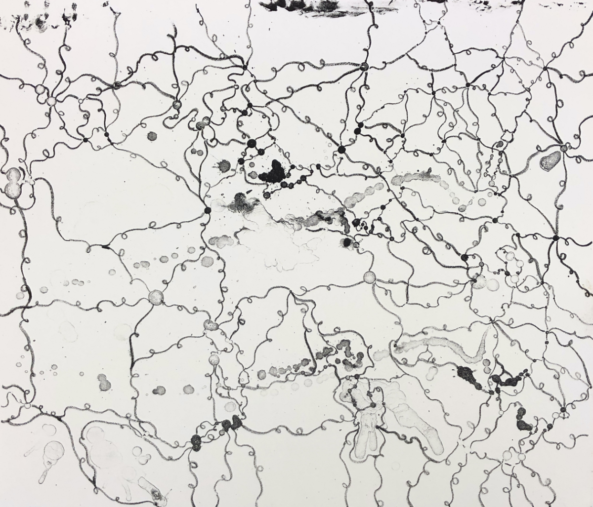
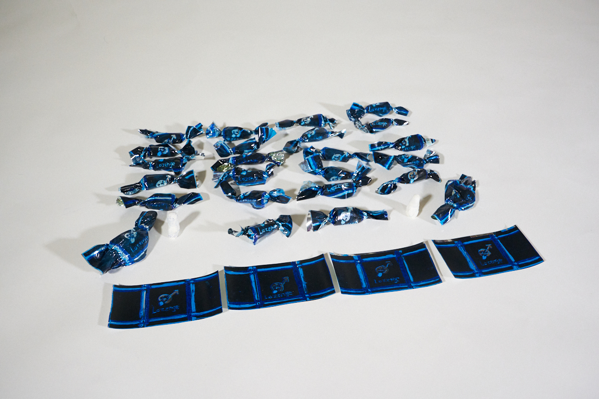

×
Home
Photography
Sculpture
Time Based
Works On Paper
About
Contact
by Merlin Thomas Lee
☰
Art, Design, Photo, & Video
Recent Work
1 / 3
The Semiotics of Masculinity
2 / 3

Untitled (Emotions Series), Lithograph
3 / 3

Lozenges
❮
❯